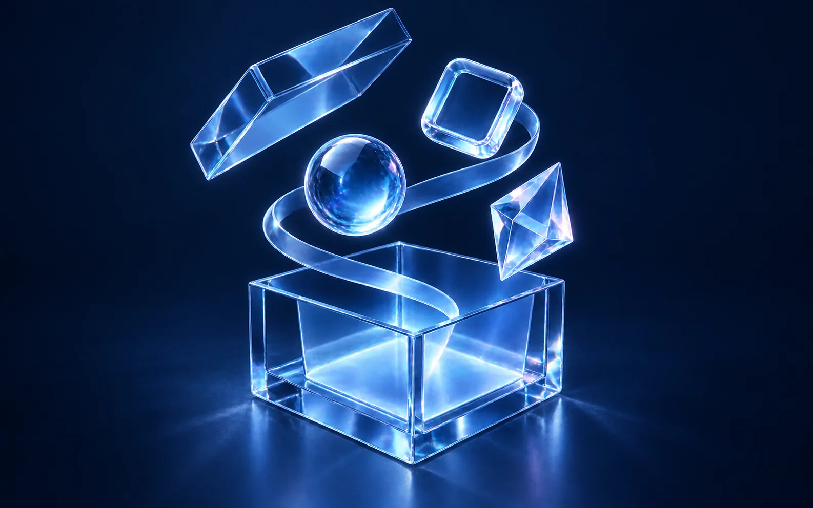
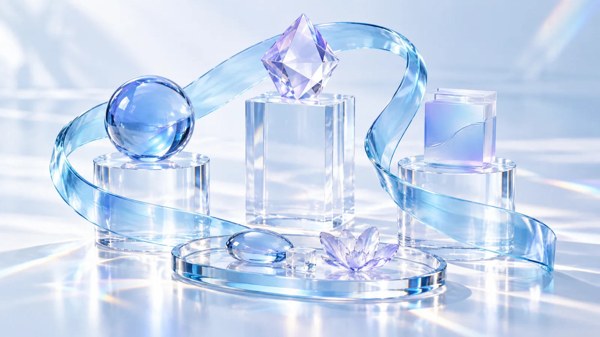
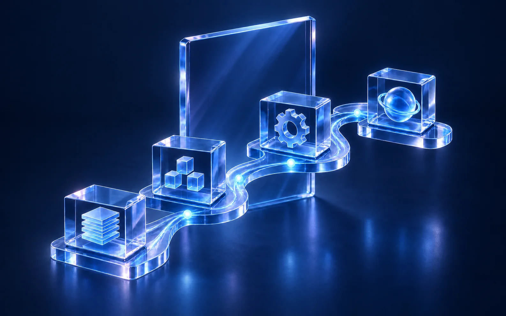
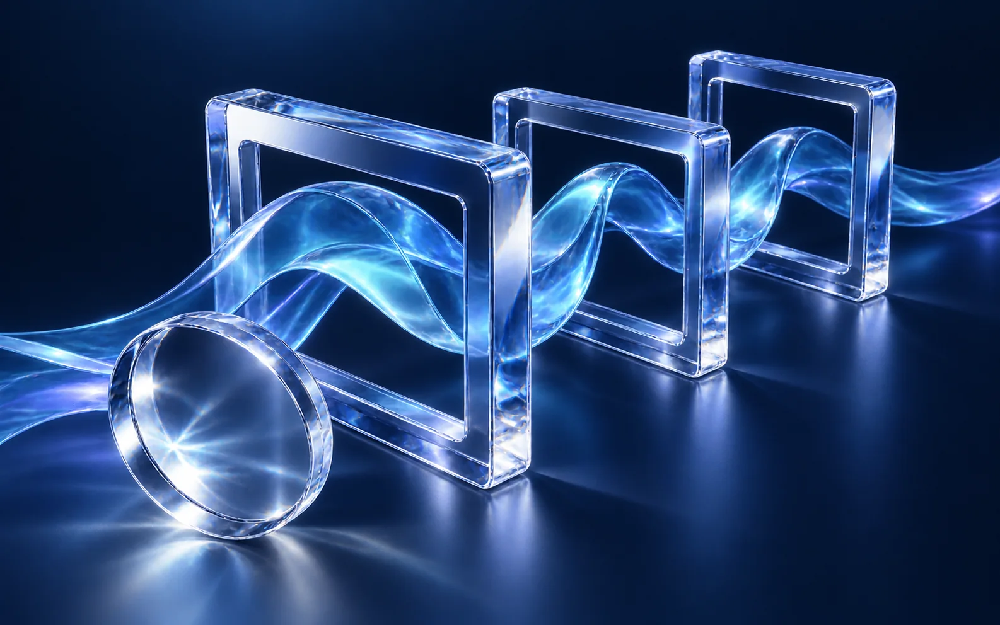
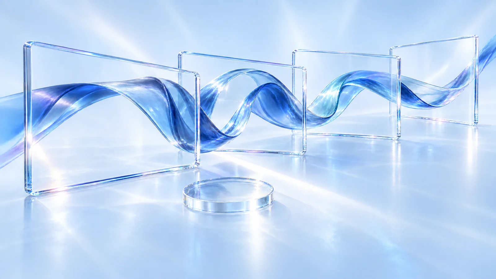
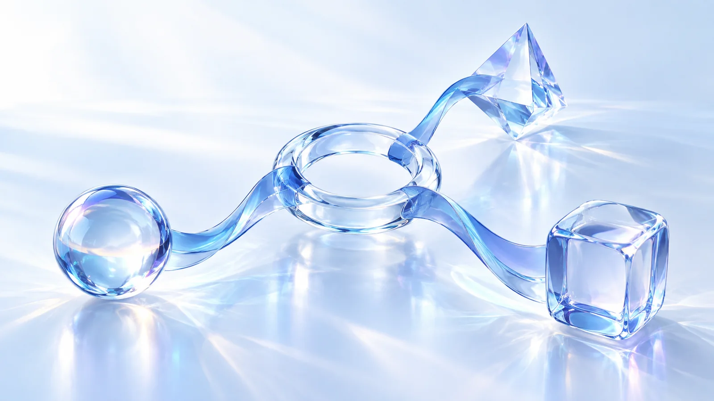

MYSTENA — Business visuals01 エンターテインメントEC

A · 一覧用 / Afterglow
B · 詳細用 / Daylight02 サービス・システム開発

A · 一覧用 / AfterglowB · 詳細用 / Daylight03 映像・コンテンツ制作

A · 一覧用 / Afterglow
B · 詳細用 / Daylight04 マーケティング・コラボレーション
A · 一覧用 / Afterglow
B · 詳細用 / Daylight